특수용접기능사 (2003-01-27 기출문제)
1과목: 용접일반
1. 일반적으로 산소 아크 절단법에 가장 많이 사용하는 전원은?
- 직류
- 직류 정극성
- 직류 역극성
- 직류, 교류 구분없이 사용
(정답률: 67%)

2. 연강을 아크에어 가우징 할 때, 나비 10mm,깊이 5mm 정도의 홈을 파는 경우 가우징의 속도는 다음 중 얼마 정도인가? (단, 사용 전류는 200∼350 [A]이다.)
- 0.5 m/min
- 0.2 m/min
- 1.5 m/min
- 1.0 m/min
(정답률: 19%)
3. KS규격에 규정하고 있는 연강용 가스 용접봉의 시험편처리 표시 기호 중 NSR의 뜻은?
- 625 ± 25℃로써 용착금속의 응력을 제거한 것
- 용착금속의 인장강도를 나타낸 것
- 용착금속의 응력을 제거하지 않은 것
- 연신율을 나타낸 것
(정답률: 73%)
4. 교류 아크 용접기를 사용할 때, 피복 용접봉을 사용하는 이유로 가장 적합한 것은?
- 전력 소비량을 절약하기 위하여
- 용착 금속의 질을 양호하게 하기 위하여
- 용접시간을 단축하기 위하여
- 단락 전류를 갖게 하여 용접기의 수명을 길게 하기 위하여
(정답률: 80%)
5. 용접봉 지름이 ø9mm 정도이고, 용접전류가 400[A]이상인 탄소아크 용접에 다음 중 가장 적합한 차광유리의 차광도 번호는?
- 18
- 14
- 10
- 6
(정답률: 74%)
6. 텅스텐 전극과 모재와의 사이에 아크를 발생시켜 아르곤가스 등을 공급해서 절단하는 방법은?
- 플라즈마 제트절단
- 산소아크절단
- TIG절단
- 금속아크절단
(정답률: 66%)
7. 저수소계 용접봉의 특징이 아닌 것은?
- 용착금속중의 수소량이 다른 용접봉에 비해서 현저하게 적다.
- 용착금속의 취성이 좋으며 화학적 성질도 좋다.
- 균열에 대한 감수성이 특히 좋아서 두꺼운 판 용접에 사용된다.
- 고탄소강 및 황의 함유량이 많은 쾌삭강 등의 용접에 사용되고 있다.
(정답률: 29%)
8. 아세틸렌 가스의 청정 방법에는 물리적인 방법과 화학적인 방법이 있다. 화학적인 청정방법에 사용되는 것은?
- 펠트
- 목탄
- 코크스 분말
- 헤라톨
(정답률: 49%)
9. 가스절단에 이용되는 프로판가스와 아세틸렌 가스를 비교하였을 때 프로판가스의 특징이 아닌 것은?
- 절단면 윗모서리가 잘 녹아내리지 않는다.
- 박판 절단시 속도가 아세틸렌 보다 빠르다.
- 절단면의 거칠기가 미세하여 깨끗하다.
- 슬래그의 제거가 쉽다.
(정답률: 62%)
10. 직류 역극성으로 용접하였을 때, 나타나는 현상 설명으로 가장 적합한 것은?
- 용접봉의 용융속도는 늦고 모재의 용입은 직류 정극성보다 깊어진다.
- 용접봉의 용융속도는 빠르고 모재의 용입은 직류 정극성보다 얕아진다.
- 용접봉의 용융속도는 극성에 관계 없으며 모재의 용입만 직류 정극성보다 얕아진다.
- 용접봉의 용융속도와 모재의 용입은 극성에 관계없이 전류의 세기에 따라 변한다.
(정답률: 68%)
11. 피복제의 일부가 가스화하여 가스를 뿜어냄으로서 미세한 용적이 날려서 용접봉에서 모재로 용융금속이 옮겨가는 방식은?
- 단락형(short circuiting transfer)
- 글로뷸러형(globular transfer)
- 스프레이형(spray transfer)
- 리액턴스형(reactance transfer)
(정답률: 83%)
12. 피복 아크 용접봉에서 피복 배합제인 아교는 무슨 역할을 하는가?
- 아크 안정제
- 합금제
- 탈산제
- 환원가스 발생제
(정답률: 53%)
13. 직류아크 용접기에 관한 설명으로 올바른 것은?
- 구조가 간단하다
- 가격이 저렴하다
- 감전의 위험이 많다
- 극성의 변화가 가능하다
(정답률: 30%)
14. 스카핑에 대한 설명으로 올바른 것은?
- 홈의 깊이와 나비의 비는 1:1~1:1.3 이다.
- 용접결함이나 둥근 홈을 깊게 파내는 작업이다.
- 작업속도는 절단 때의 2~5배 속도이며 숙련이 필요하다.
- 각종 강괴 표면의 탈탄층 또는 개재물등의 표면결함을 불꽃가공으로 제거하는 것이다.
(정답률: 53%)
15. 각종 금속의 가스용접에서 용제를 사용하지 않는 용접금속은?
- 구리합금
- 주철
- 알루미늄
- 연강
(정답률: 63%)
16. 산소-아세틸렌 가스용접을 이용하여 용접하지 않는 모재는?
- 탄소강
- 회주철
- 티탄합금
- 순 알루미늄
(정답률: 15%)
17. 서브머지드아크 용접장치에 대한 설명 중 틀린 것은?
- 와이어 송급장치, 접촉팁, 용제호퍼 등을 용접헤드(welding head)라 한다.
- 용접 전류는 접촉팁에서 와이어에 송급된다.
- 직류 전원이 설비비가 적고, 자기불림이 없다.
- 박판에서는 약 400[A] 이하에서 직류 역극성으로 고속도 용접시공하면 아름다운 비드를 얻을 수 있다.
(정답률: 49%)
18. 환원가스발생 작용을 하는 피복아크 용접봉의 피복제 성분은?
- 산화티탄
- 규산나트륨
- 탄산칼륨
- 셀룰로스
(정답률: 32%)
19. 수동 아크 용접기가 갖추어야 할 용접기 특성은?
- 수하 특성과 상승 특성
- 정전류 특성과 상승 특성
- 정전류 특성과 정전압 특성
- 수하 특성과 정전류 특성
(정답률: 57%)
20. 탄소아크 절단에 압축공기를 병용한 방법으로 용융부에, 전극홀더의 구멍에서 탄소 전극봉에 나란히 분출하는 고속의 공기제트를 불어서, 홈을 파거나 절단하는 방법은?
- 아크 에어 가우징
- 산소 아크 절단
- 플라즈마 아크 절단
- 산소창 절단
(정답률: 68%)
21. 피복아크용접에서 상진법으로 수직용접할 때 비교적 많이 적용되는 운봉법이 아닌 것은?
- 직선
- 삼각형
- 8자형
- 백스텝
(정답률: 50%)
22. 텅스텐 전극의 비용극식, 불활성가스 아크 용접(TIG)의 상품 명칭에 해당되지 않는 것은?
- 헬리아크(heli arc)
- 아르곤아크(argon arc)
- 헬리웰드(heli weld)
- 필러아크(filler arc)
(정답률: 25%)
23. 피복아크 용접봉에서 피복제의 역할에 해당되는 것은?
- 서냉 방지작용
- 슬래그 제거작용
- 산화 정련작용
- 아크 안정작용
(정답률: 74%)
24. 용접결함을 구조상결함과 치수상결함으로 분류할 때 치수상의 결함은?
- 용접균열
- 슬랙섞임
- 형상불량
- 표면결함
(정답률: 60%)
25. 이산화탄소 아크용접에서 전류는 용입을 결정하는 가장 큰 요인이며 용접속도는 용접전류, 아크전압과 함께 용입깊이, 비드형상, 용착금속량 등이 결정되는 중요한 요인이다. 아크전압이 결정하는 가장 중요한 요인은?
- 용착금속량
- 비드형상
- 용입
- 용접결함
(정답률: 24%)
26. 아크길이가 길 때, 발생하는 현상이 아닌 것은?
- 스패터의 발생이 많다.
- 용착금속의 재질이 불량해진다.
- 오버랩이 생긴다.
- 비드의 외관이 불량해진다.
(정답률: 49%)
27. KS규격에서 나타내는 방사능의 안전표시 색채는?
- 빨강
- 녹색
- 자주
- 주황
(정답률: 36%)
28. 피복아크 용접봉을 선택할 때의 고려사항 중 잘못된 것은?
- 용접사의 경력
- 용접 구조물에 요구되는 품질
- 이음의 모양 및 용접부의 성질
- 용접장소와 자세
(정답률: 83%)
29. 건물 밀집지역에서 강풍시의 연소속도가 그 구조면에서 볼 때 다음 중 가장 빠른 것은 어느 것인가?
- 목조
- 유리방화조
- 석(石)내화조
- 철조
(정답률: 64%)
30. 최대 연소 속도가 가장 큰 가스는?
- 수소
- 메탄
- 프로판
- 부탄
(정답률: 68%)
31. 가연성가스의 연소와 같은 폭발은 어느 것인가?
- 물리적 폭발
- 원자 폭발
- 화학적 폭발
- 열 폭발
(정답률: 63%)
32. 아크 용접에서 직류 역극성으로 용접 할 때의 특성에 대한 설명으로 틀린 것은?
- 전체 발생열량의 70%가 용접봉 쪽에서 발생한다.
- 비드 폭이 좁다.
- 용접봉의 용융이 빠르다.
- 박판 용접에 쓰인다.
(정답률: 50%)
33. 연강 피복 아크용접봉인 E4316의 계열은 어느 계열인가?
- 저수소계
- 고 산화티탄계
- 철분저수소계
- 일미나이트계
(정답률: 69%)
34. 맞대기 용접에서 한쪽 방향의 완전한 용입을 얻고자 할 때 가장 적합한 홈의 형상은?
- I형
- X형
- V형
- H형
(정답률: 28%)
35. 다음 중 가스용접에서 용제(FLUX)를 사용하는 가장 중요한 이유인 것은?
- 용접봉 용융속도를 느리게 하기 위하여
- 모재의 용융온도를 낮추기 위하여
- 침탄이나 질화를 돕기 위하여
- 용접봉 산화물을 제거하기 위하여
(정답률: 41%)
2과목: 용접재료
36. 탄소강에 함유된 성분 중 황에 대한 설명으로 옳지 않은 것은?
- 고온가공성을 해치게 한다.
- 냉간메짐을 일으킨다.
- 망간을 첨가하여 황의 해를 제거할 수 있다.
- 0.25%의 황이 함유된 강을 쾌삭강이라 한다.
(정답률: 50%)
37. 미하나이트 주철(Meehanite cast iron) 제조시 첨가원소는?
- 칼슘 – 규소
- 망간 - 규소
- 규소 – 크롬
- 크롬 - 몰리브덴
(정답률: 10%)
38. 알루미늄(Aℓ)은 철강에 비하여 일반 용접법으로 용접이 극히 곤란하다. 그 이유로 가장 적합한 것은?
- 비열 및 열전도도가 적다.
- 용융점이 비교적 높다.
- 고온강도가 높다.
- 열팽창계수가 매우 크다.
(정답률: 25%)
39. 황동의 기계적 성질 중 연신율이 최대가 되는 아연 함유량은?
- 40%
- 4%
- 25%
- 30%
(정답률: 31%)
40. 니켈중의 크롬 함유량이 증가함에 따라 합금의 전기 비저항이 증가하는 데 약 몇 % Cr에서 최대가 되는가?
- 40%
- 30%
- 20%
- 10%
(정답률: 27%)
41. 알루미늄(Al)의 성질에 관한 설명으로 틀린 것은?
- 비중이 가벼운 경금속이다.
- 전기 및 열의 전도율이 구리보다 좋다.
- 공기 중에서 표면에 Al2O3의 얇은 막이 생겨 내식성이 좋다.
- 상온 및 고온에서 가공이 용이하다.
(정답률: 53%)
42. 크롬을 주체로 하고 내충격성과 내마멸성 증대를 위해서 규소, 니켈, 텅스텐 등을 첨가한 Cr-Si계 밸브용 강은?
- 실크롬 강(silchrome steel)
- 하드필드 강(hadfield steel)
- 듀콜 강(ducol steel)
- 스텔라이트(stellite)
(정답률: 16%)
43. 탄소강에서 헤어크랙(hair crack)의 원인이 되는 원소는?
- O2
- N2
- H2
- C
(정답률: 32%)
44. 6 : 4 황동에 관한 설명으로 옳은 것은?
- 아연 40% 내외의 것은 문쯔메탈이라고도 한다.
- 상온에서도 전성이 있다.
- 압연, 드로잉 등의 가공으로 쉽게 판재, 봉재, 관재 등을 만들 수 있다.
- 냉간가공성이 좋다.
(정답률: 42%)
45. Mg-Aℓ -Zn 합금의 대표적인 것은?
- 실루민
- 듀랄루민
- Y합금
- 엘렉트론
(정답률: 25%)
46. 고탄소강이나 후판 용접시 예열 및 후열을 하는 목적은?
- 쇳물의 유동성을 좋게 하기 위해
- 균열이나 기공의 발생을 방지하기 위해
- 담금질 되도록 하기 위해
- 변형을 방지하기 위해
(정답률: 41%)
47. 용접성은 Ti과 비슷하면서 내식성이 우수하고 열중성자의 흡수가 적어 원자로에서 핵연료 피복제로 사용 되는것은?
- STS
- Al2O3
- Zn
- Zr
(정답률: 23%)
48. 다음 중 비중이 가장 높은 금속은?
- 크롬
- 바나듐
- 망간
- 구리
(정답률: 13%)
49. 18-8 스테인레스강의 성분으로 올바른 것은?
- Cr(18%)-Ni(8%)
- Ni(18%)-Cr(8%)
- Si(18%)-Ni(8%)
- Ni(18%)-Si(8%)
(정답률: 46%)
50. 보통주철의 압축강도는 인장강도의 약 몇 배 정도가 되는가?
- 1 ‾1.5 배
- 1.5 ‾2 배
- 3 ‾4 배
- 5 ‾6 배
(정답률: 18%)
3과목: 기계제도
51. 다음 중 가는 2점 쇄선을 사용하여 도시하는 경우는?
- 도시된 물체의 단면 앞쪽을 표시
- 다듬질한 형상이 평면임을 표시
- 수면, 유면 등의 위치를 표시
- 중심이 이동한 중심 궤적을 표시
(정답률: 25%)
52. 다음은 제3각법에 대하여 설명한 것이다. 틀린 것은?
- 평면도는 정면도의 상부에 도시한다.
- 좌측면도는 정면도의 좌측에 도시한다.
- 우측면도는 평면도의 우측에 도시한다.
- 저면도(밑면도)는 정면도 밑에 도시한다.
(정답률: 30%)
53. 보기의 입체도 A, B, C, D를 1, 2, 3, 4 로 표시된 평면도에서 적합한 형상으로 올바르게 짝지워진 것은?
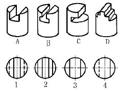
- A-3, B-1, C-4, D-2
- A-1, B-4, C-2, D-3
- A-4, B-2, C-3, D-1
- A-3, B-2, C-1, D-4
(정답률: 48%)
54. 보기의 정면도와 우측면도에 가장 적합한 평면도는?
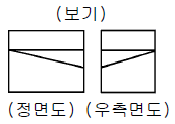
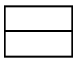
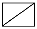
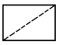
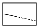
(정답률: 21%)
55. 보기의 도면이 3각법에 의한 정면도와 평면도일 경우 좌측면도로 가장 적합한 것은?
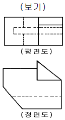
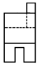
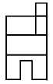
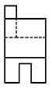
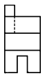
(정답률: 24%)
56. 보기 도면의 용접도시 기호 해석으로 올바른 것은?
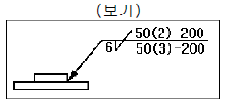
- 연속필렛 용접이다.
- 화살표쪽 용접수는 2개이다.
- 화살표 반대쪽 용접피치는 50 mm 이다.
- 용접다리 길이는 양쪽 모두 6 mm 이다.
(정답률: 26%)
57. 용접 보조기호 중 "F" 로 기입되어 있는 것은 용접부의 다듬질 방법 중 어떤 것을 나타내는 것인가?
- 치핑
- 연삭
- 절삭
- 지정하지 않음
(정답률: 20%)
58. 다음 전개도법에서 원뿔의 전개에 가장 적합한 것은?
- 평행 전개법
- 방사 전개법
- 삼각 전개법
- 정 다각형법
(정답률: 11%)
59. 도면을 그릴 때 대상물의 실제 길이와 같은 현척이 가장 보편적으로 사용되나, 그림의 형상이 실제치수와 비례하지 않을 경우에 척도란에 사용하는 기호는?
- KS
- NS
- MS
- ISO
(정답률: 29%)
60. 스케치 할 물체의 표면에 기름이나 광명단을 칠한 후 그 위에 종이를 대고 눌러서 실제의 모양을 뜨는 방법을 무엇이라 하는가?
- 모양뜨기법
- 프린트법
- 프리핸드법
- 사진법
(정답률: 29%)